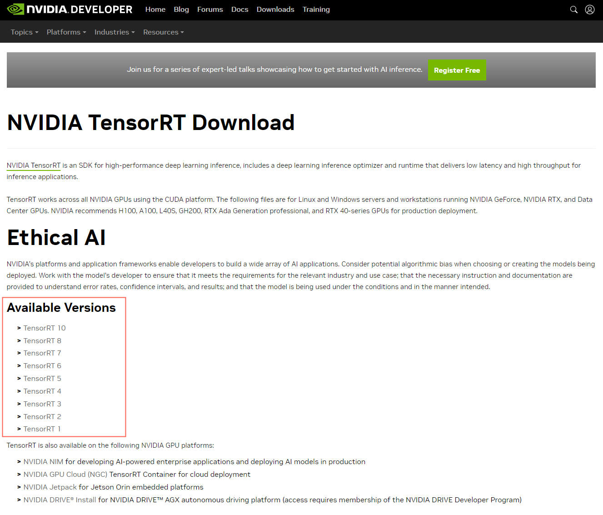
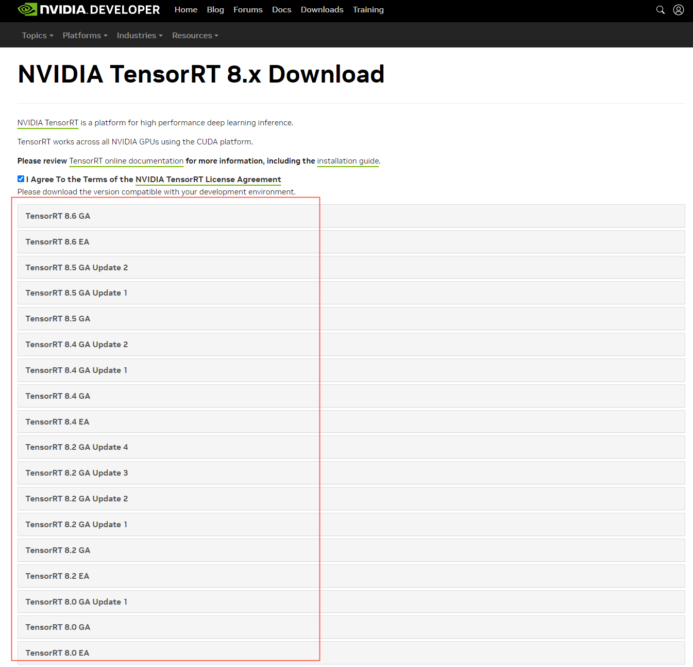
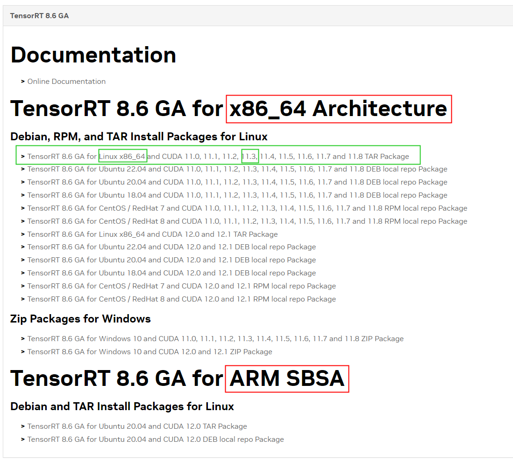
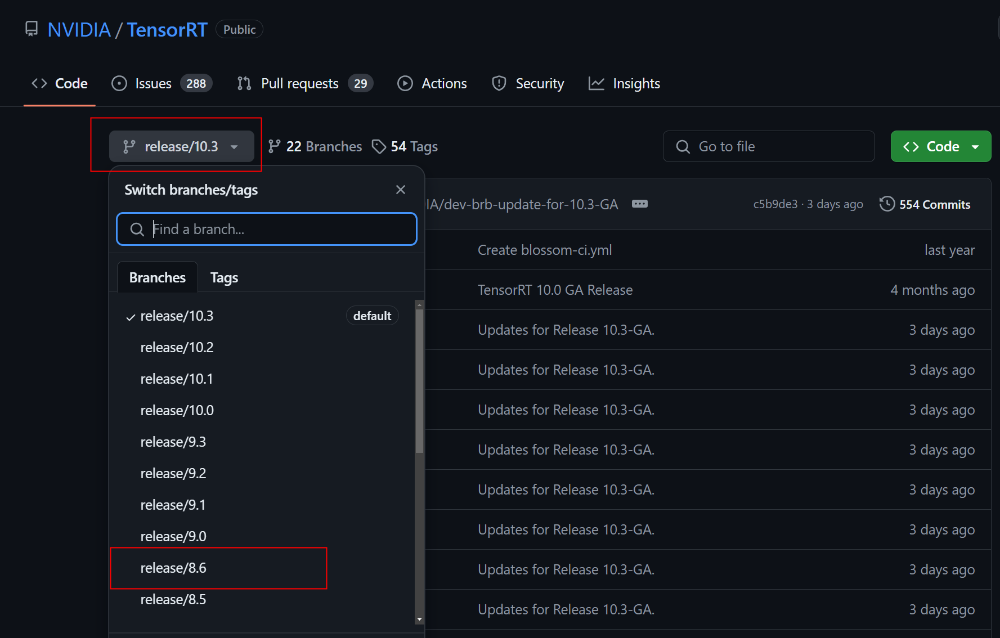

PyTorch转TensorRT-engine保姆级教程
torch2onnx2trt使用指南-详细版本
在模型训练完成后，所得到的权重往往存在一定的冗余，在基于该权重进行推理时，会消耗一部分时间来执行这些冗余部分的前向传播过程。
通过一些技术手段来减少这些冗余，往往可以在保证推理结果准确性的基础上获得一定程度的推理效率提升。
TensorRT 是 NVIDIA 开发的高性能深度学习推理优化器，专为加速神经网络推理而设计。使用TensorRT ，能够将模型权重转换为高效的推理引擎，显著提升推理速度和降低延迟，适用于各种深度学习应用。
以下是我在RTX3060显卡上使用TensorRT前后测试的单模型推理时间结果：
| 模型格式 | 前向推理时间(单位：s) |
|---|---|
| PyTorch | 51s |
| ONNX | 44s |
| TensorRT Engine(FP32) | 35s |
| TensorRT Engine(FP16) | 15s |
可以看到，借助TensorRT，在保持模型全精度(FP32)的前提下，前向推理时间降低为原来的32%，加速比为145%；如果进一步开启半精度(FP16)，前向推理时间可以降低为原来的70%，加速比达到了340%。
本文目标
将训练好的PyTorch权重转换为TensorRT的Engine，以提升推理效率。
操作步骤
注：本文档所提供的操作步骤均在Linux系统上进行，Windows暂未测试。
step1. 环境搭建
s1.1. TensorRT软件包下载
首先进入TensorRT的官网(https://developer.nvidia.com/tensorrt/download)，页面如下：

可以看到其中列举了不同版本的TensorRT软件包，每个版本都提供了对于不同的CUDA版本的支持，选择希望下载的版本，比如我选择其中的++TensorRT 8++，来到如下页面：

这里提供了++TensorRT 8++对应的细分版本，每个细分版本又分为GA和EA，GA是正式版，EA是测试版，建议选择正式版GA，比如我选择++TensorRT 8.6 GA++，来到如下页面：

上述页面提供了不同系统架构以及CUDA版本对应的TensorRT软件包，因此只要确定系统架构和CUDA版本，就可以下载对应版本的TensorRT软件包了。
:::
可以通过`arch`命令来查看机器的系统架构
我所用的机器是x86_64的；
可以通过`nvcc –version`来查看CUDA版本：
我的CUDA版本是11.3。
:::
现在已知系统架构是x86_64，CUDA版本是11.3，于是可以定位到上图中绿色框内的软件包，点击即可自动下载。
s1.2 安装TensorRT
首先解压上一步下载好的TensorRT安装包：
1 | tar -xzvf TensorRT-8.6.1.6.Linux.x86_64-gnu.cuda-11.8.tar.gz# .tar.gz文件名需要替换为你自己下载版本对应的TensorRT软件包名字 |
接下来需要设置环境变量。
使用vim编辑~/.bashrc：
1 | vim ~/.bashrc |
在文件末尾添加如下内容（注意：需要将/lib和/bin对应的根路径替换为你自己解压后的TensorRT文件夹路径）：
1 | export LD_LIBRARY_PATH=$LD_LIBRARY_PATH:/path/to/TensorRT-8.6.1.6/lib |
添加完成之后，退出vim编辑器，运行：
1 | source ~/.bashrc |
执行完上述操作后，来验证一下TensorRT是否安装成功，直接在命令行执行
1 | trtexec |
等等，还没有结束。
为了在Python环境中使用TensorRT，需要安装tensorrt的Python库。具体安装方法也很简单，直接进入上面解压好的文件夹中，进入其中的Python子文件夹，然后根据Python版本选择对应的文件使用pip命令安装即可。
s1.3 安装TensorRT依赖的工具库
:::
到此已经安装好了TensorRT。然而，在实际运行TensorRT的Engine推理时，还需要一些其它工具来辅助完成推理过程，这里选择polygraphy进行实现。以下是安装方法(注：请严格按照如下方法进行安装，否则可能造成内存泄露)。
:::
首先，进入TensorRT的github页面(https://github.com/NVIDIA/TensorRT/)，将代码分支由默认的最新分支切换为之前所下载的TensorRT软件包对应的版本，比如我之前下载的是”8.6”的，因此选择切换到”release/8.6”分支，如下：

然后，将当前分支对应的源码.zip压缩包下载到自己的机器上，并解压，比如我解压到了`./TensorRT-release-8.6`文件夹。
接着，依次执行如下命令：
1 | cd ./TensorRT-release-8.6/tools/Polygraphy |
这样就完成了polygraphy的安装。
至此，环境搭建结束。
step2. PyTorch权重转换为ONNX
s2.1 定义模型
针对训练好的PyTorch格式权重，首先定义你的神经网络模型，并加载训练好的权重，然后将其移动到GPU上，并设置为推理模式：
1 | model_path='./weight.pth' |
s2.2 定义输入数据结构
这里的输入数据结构指的是模型推理时的张量形状(Tensor shape)，比如推理时我的输入是(batch _size, 3, 512, 512)大小，那么此时需要定义的数据结构的大小为(1, 3, 512, 512):
1 | dummy_input = torch.randn(1,3, 512,512) |
这个数据用于帮助 ONNX 生成器了解模型的输入形状，以便在导出模型时能够正确地构建计算图。
s2.3 执行转换
执行如下命令，就可以完成PyTorch权重到ONNX格式的转换：
1 | torch.onnx.export(model, dummy_input, "onnx.onnx", opset_version=11,input_names = ['input'],output_names = ['output'], dynamic_axes={'input':{0 : 'batch_size'},'output':{0 : 'batch_size'}},verbose=True) |
其中，”onnx.onnx”就是转换后生成的ONNX文件名，可以自定义。
step3. ONNX转换为TensorRT Engine
直接运行如下代码，就可以将ONNX转换为TensorRT Engine：
1 | import numpy as np |
运行前，需要配置其中的参数，包括：
- onnx_path：step2中转换得到的ONNX文件路径；
- save_engine_path：生成的engine保存路径；
- USE_FP16：是否开启fp16；
- profiles：设置动态batsh size的大小，包括最小/最优/最大的batch size数值。通常需要结合权重大小、推理数据大小以及显存大小进行多次测试，以充分利用显存。
step4. 将TensorRT Engine嵌入到推理流程
这一步需要修改原始PyTorch推理脚本中的两个地方，包括：
- 模型加载
- 前向传播
step4.1 修改模型加载方式
修改前：
1 | import torch |
修改后：
1 | from polygraphy.backend.common import BytesFromPath |
step4.2 修改前向传播方式
修改前：
1 | for img_batch in pytorch_data_loader: |
修改后:
1 | with TrtRunner(model) as runner:# 使用上下文管理的方式执行trt engine的推理 |